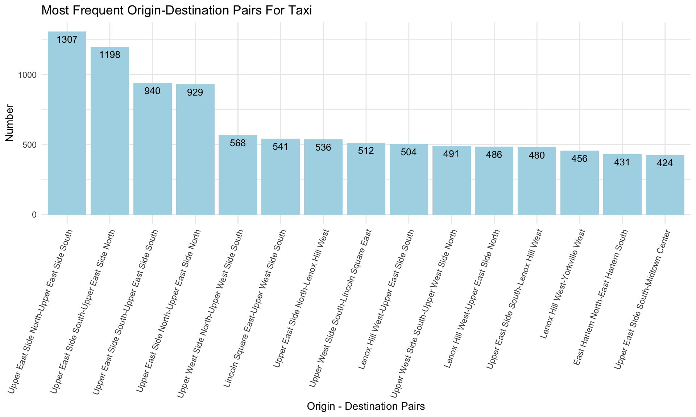
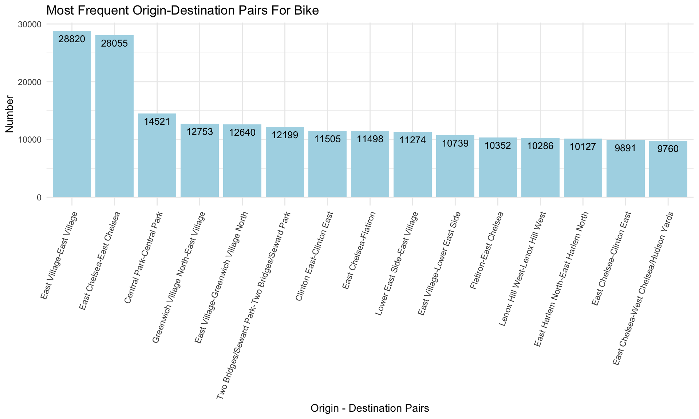
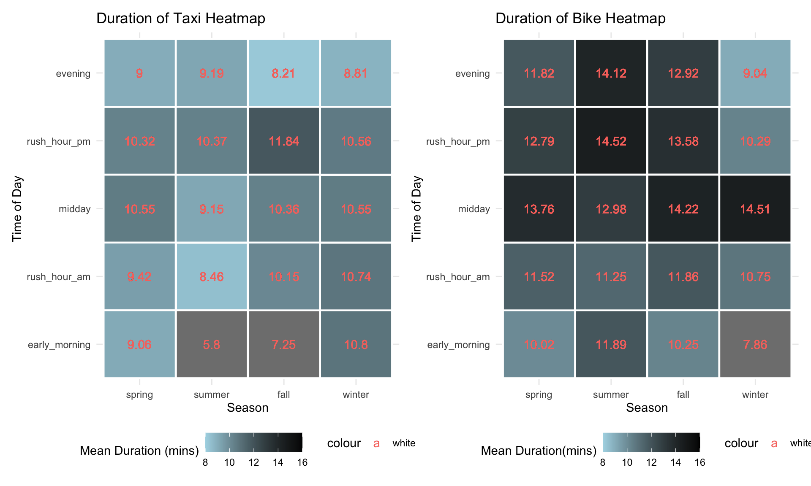
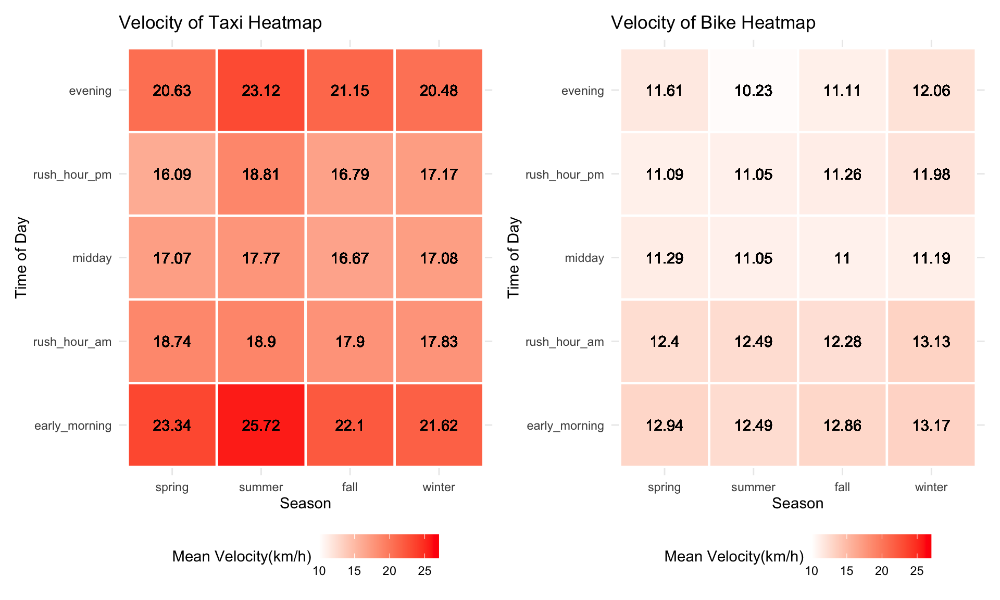
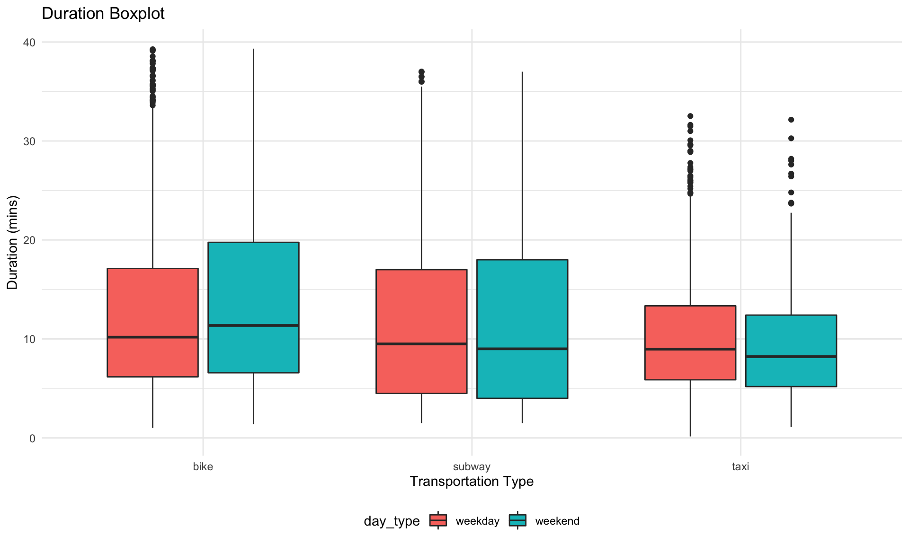
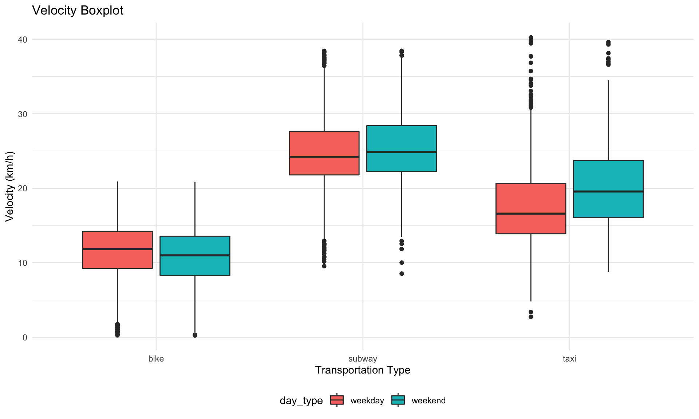

library(tidyverse)
library(ggplot2)
library(patchwork)
library(data.table)
theme_set(theme_minimal() + theme(legend.position = "bottom"))
knitr::opts_chunk$set(
echo = TRUE,
warning = FALSE,
fig.width = 10,
fig.height = 6,
out.width = "90%"
)Visualization
# read in data for visualization
taxi_df = read_csv("../P8105-Final-Project/data_vis/taxi_vis.csv")
bike_df = read_csv("../P8105-Final-Project/data_vis/bike_vis.csv")
# read in sample data
taxi_df_sample =
read_csv("../P8105-Final-Project/data_vis/taxi_sample.csv") %>%
mutate(time_of_day = factor(time_of_day, levels = c("early_morning", "rush_hour_am", "midday", "rush_hour_pm", "evening")),
season = factor(season, levels = c("spring", "summer", "fall", "winter")))
bike_df_sample =
read_csv("../P8105-Final-Project/data_vis/bike_sample.csv") %>%
mutate(time_of_day = factor(time_of_day, levels = c("early_morning", "rush_hour_am", "midday", "rush_hour_pm", "evening")),
season = factor(season, levels = c("spring", "summer", "fall", "winter")))
subway_df_sample =
read_csv("../P8105-Final-Project/data_vis/subway_sample.csv") %>%
mutate(time_of_day = factor(time_of_day, levels = c("early_morning", "rush_hour_am", "midday", "rush_hour_pm", "evening")),
season = factor(season, levels = c("spring", "summer", "fall", "winter")))Most Frequent Origin - Destination Pairs
Looking at the most frequent origin-destination pairs in our dataset, we can see which areas in Manhattan people prefer getting around by taxi and which area in Manhattan people prefer getting around by bike.
Taxi
taxi_df %>%
mutate(loc_pair = fct_infreq(loc_pair)) %>%
group_by(loc_pair) %>%
summarize(total = n()) %>%
arrange(desc(total)) %>%
top_n(15) %>%
ggplot(aes(x = loc_pair, y = total)) +
geom_bar(stat = "identity" , fill = "lightblue")+
theme(axis.text.x = element_text(angle = 70, vjust = 1, hjust=1)) +
geom_text(aes(label=total), vjust=1.6, color="black", size=3.5) +
labs(title = "Most Frequent Origin-Destination Pairs For Taxi", x = "Origin - Destination Pairs", y = "Number")
From this barplot we can see that the top 15 most frequent origin-destination pairs are located in the upper east side and in the upper west side.
Bike
bike_df %>%
mutate(loc_pair = fct_infreq(loc_pair)) %>%
group_by(loc_pair) %>%
summarize(total = n()) %>%
arrange(desc(total)) %>%
top_n(15) %>%
ggplot(aes(x = loc_pair, y = total)) +
geom_bar(stat = "identity" , fill = "lightblue")+
theme(axis.text.x = element_text(angle = 70, vjust = 1, hjust=1)) +
geom_text(aes(label=total), vjust=1.6, color="black", size=3.5) +
labs(title = "Most Frequent Origin-Destination Pairs For Bike", x = "Origin - Destination Pairs", y = "Number")
From this barplot we can see that the top 15 most frequent origin-destination pairs for bike are located in East Village, East Chelsea and Central Park.
To get a general understanding of the travel time and the travel velocity of each type of transportation, we made heatmaps and boxplots to show travel time and velocity during different time periods of the day and across seasons.
Taxi Travel Time vs. Bike Travel Time
# taxi heatmap for duration
hp1 =
taxi_df_sample %>%
group_by(season, time_of_day) %>%
mutate(grp_mean = mean(duration)) %>%
select(season, time_of_day, grp_mean) %>%
ggplot(aes(season, time_of_day)) +
geom_tile(aes(fill = grp_mean), color = "white", lwd = 0.8, linetype = 1) +
scale_fill_gradient(low = "lightblue", high = "black", limits = c(8, 16)) +
geom_text(aes(label = round(grp_mean, digits = 2), color = "white")) +
labs(title = "Duration of Taxi Heatmap", x = "Season", y ="Time of Day", fill = "Mean Duration (mins)")# bike heatmap for duration
hp2 =
bike_df_sample %>%
group_by(season, time_of_day) %>%
mutate(grp_mean = mean(duration)) %>%
select(season, time_of_day, grp_mean) %>%
ggplot(aes(season, time_of_day)) +
geom_tile(aes(fill = grp_mean), color = "white", lwd = 0.8, linetype = 1) +
scale_fill_gradient(low = "lightblue", high = "black", limits = c(8, 16)) +
geom_text(aes(label = round(grp_mean, digits = 2), color = "white")) +
labs(title = "Duration of Bike Heatmap", x = "Season", y ="Time of Day", fill = "Mean Duration(mins)")
hp1 + hp2
These two heatmaps compare the travel time between taxi and bike. We can see that the travel time for bike are overall greater than the travel time for taxi for all day and all seasons. The travel times are the greatest during rush hour from 4pm to 7pm for both taxi and bike. Across four seasons, the travel time is the greatest in winter for taxi and the travel time is the greatest in spring for bike.
# taxi heatmap for velocity
hp3 =
taxi_df_sample %>%
group_by(season, time_of_day) %>%
mutate(grp_mean = mean(velocity)) %>%
select(season, time_of_day, grp_mean) %>%
ggplot(aes(season, time_of_day)) +
geom_tile(aes(fill = grp_mean), color = "white", lwd = 0.8, linetype = 1) +
scale_fill_gradient(low = "white", high = "red", limits = c(10, 27)) +
geom_text(aes(label = round(grp_mean, digits = 2))) +
labs(title = "Velocity of Taxi Heatmap", x = "Season", y ="Time of Day", fill = "Mean Velocity(km/h)")# bike heatmap for velocity
hp4 =
bike_df_sample %>%
group_by(season, time_of_day) %>%
mutate(grp_mean = mean(velocity)) %>%
select(season, time_of_day, grp_mean) %>%
ggplot(aes(season, time_of_day)) +
geom_tile(aes(fill = grp_mean), color = "white", lwd = 0.8, linetype = 1) +
scale_fill_gradient(low = "white", high = "red", limits = c(10, 27)) +
geom_text(aes(label = round(grp_mean, digits = 2))) +
labs(title = "Velocity of Bike Heatmap", x = "Season", y ="Time of Day", fill = "Mean Velocity(km/h)")
hp3 + hp4
These two heatmaps compare the velocity between taxi and bike. We can see that the velocity for bike is overall smaller than the velocity for taxi all day and all seasons. Taxi travels the slowest during rush hour from 4pm to 7pm all seasons except fall and taxi travels the slowest in winter. Similar to taxi, bike travels the slowest during rush hour from 4pm to 7pm all seasons except fall.
# combine taxi bike, subway datasets to make boxplot
comb_df = bind_rows(taxi_df_sample, bike_df_sample, subway_df_sample)comb_df %>%
ggplot(aes(x = type, y = duration, fill = day_type)) +
geom_boxplot() +
labs(title = "Duration Boxplot", x = "Transportation Type", y = "Duration (mins)")
This duration boxplot compares the travel time on weekdays and weekends for each type of transportation. From this plot we can see that the travel time is greater on weekend for bike. The travel time seems to be similar for subway on both weekdays and weekend. The travel time for taxi is longer on weekdays.
comb_df %>%
ggplot(aes(x = type, y = velocity, fill = day_type)) +
geom_boxplot() +
labs(title = "Velocity Boxplot", x = "Transportation Type", y = "Velocity (km/h)")
This velocity boxplot compares the travel velocity on weekdays and weekends for each type of transportation. From this plot we can see that the velocities for subway on both weekdays and weekend are the greatest and they are similar across the week. Taxi travels faster on the weekend and bike travels faster on weekdays.
Visualization
# Read velocity dataset.
test_df <- read_csv("../P8105-Final-Project/data/test_dt_V1.csv")
# Select data with time range
test_df <- setDT(test_df)
test_df <- test_df[, date := format(as.Date(tpep_pickup_datetime),"%Y-%m-%d")]
test_df <- test_df[date >= "2020-06"][date < "2021-06"]
# Read weather dataset.
weather_df <- read_csv("../P8105-Final-Project/data/manhattan_weather.csv")
# Data clean
test_df <-
test_df %>%
mutate(date = format(tpep_pickup_datetime, format = '%Y-%m-%d')) %>%
mutate(date = as.Date(date))
# Join table
weather_transport_df <-
left_join(test_df, weather_df, by = "date") %>%
dplyr::select(trip_distance, type, month, velocity, date, awnd, prcp, snwd, tmax, tmin, tsun) %>%
mutate(type = as.factor(type))# popular of transportation vs month
weather_transport_df %>%
mutate(month = as.factor(month)) %>%
group_by(type, month) %>%
summarise(n_obs = n()) %>%
ggplot(aes(x = month, y = n_obs, group = type, fill = type)) +
geom_bar(stat = "identity", alpha = 0.5) +
geom_line(aes(color = type)) +
facet_grid(.~type) +
labs(title = "Popular of Transportation According to Month",
x = "Month",
y = "Trends of Transportation") +
theme(plot.title = element_text(hjust = 0.5))
The trends for people choose to travel outside are generally similar no matter using bikes or cabs. But it exists a more significant drop for choosing taxi during the June and less people ride bikes during Dec and Feb. After analyzing the possible casuals, June is the month for students within NYU start their Summer Vacations. So the traffic pressure has a visualized decrease with more people still live in NYU. And for people, especially students, who still live in NYU, they do not have the need to commute in a hurry. Also, with the temperature getting colder and colder, people will prefer more stay at home comparing to traveling and less possibility for them to riding bikes outside. The temperature of the weather could be a confounder to transport choice and month model, but not for special month June.
# wind speed (mm) vs velocity
weather_transport_df %>%
group_by(type, awnd) %>%
summarize(v_mean = mean(velocity)) %>%
ggplot(aes(x = awnd/10, y = v_mean, group = type, colour = type)) +
geom_point(aes(colour = type)) +
geom_smooth(method = lm) +
labs(title = "Velocity vs Wind Speed",
x = "Wind Speed (m/s)",
y = "Mean Velocity (m/s)") +
theme(plot.title = element_text(hjust = 0.5))%20vs%20velocity-1.png)
It’s interesting to find out the truth that following by the increasing of wind speed, a linear regression model could be explored between the velocity of bike riders and wind speed and velocity of bikes is increasing as well. While at the same time, wind speed does no influence to taxi drivers.
# Precipitation(mm) vs velocity
prcp_vel <-
weather_transport_df %>%
group_by(type, prcp) %>%
summarize(v_mean = mean(velocity)) %>%
ggplot(aes(x = prcp/10, y = v_mean, group = type, colour = type)) +
geom_point(aes(colour = type)) +
geom_smooth(method = lm) +
labs(title = "Velocity vs Precipitation",
x = "Precipitation (mm)",
y = "Mean Velocity (m/s)") +
theme(plot.title = element_text(hjust = 0.5))
# Precipitation(mm) vs transportation choice
prcp_trans <-
weather_transport_df %>%
group_by(type, prcp) %>%
summarise(n_avg = n()/n_distinct(date)) %>%
ggplot(aes(x = prcp/10, y = n_avg, group = type, colour = type)) +
geom_point(aes(color = type)) +
geom_smooth(method = lm) +
labs(title = "Transport Choice vs Precipitation",
x = "Precipitation (mm)",
y = "Avg Travels counts per day") +
theme(plot.title = element_text(hjust = 0.5))
prcp_vel + prcp_trans
Velocity could be regarded as one parameter to judge the flow of a transportation. Obviously from the plots showing the connection between the velocity and the mode of transport, the velocity of taxi are faster to bike on average. And the light to moderate rain (<30 mm), precipitation seems have no impact to the velocity, especially while taking a look at bike data. That might because though raining will make road more slippery, it also has washing effect to environment and other effects. The combination of all effects make velocity nearly stay the same. Moreover, the more amount of rain is, the slower the traffic it would be, the less people would choose to travel and it is more likely to choose taxi while weather condition getting even worse compared to riding. That might because a heavy rain might possibly affect drivers and riders visibility, thus decreases the vehicle speed and affects travel choice.
# High Temperature vs transportation choice.
ht_trans <-
weather_transport_df %>%
group_by(type, tmax) %>%
summarise(n_avg = n()/n_distinct(date)) %>%
ggplot(aes(x = tmax/10, y = n_avg, group = type, colour = type)) +
geom_point(aes(color = type)) +
geom_smooth() +
labs(title = "Transit vs High T",
x = "High Temperature (°C)",
y = "Avg Travel Counts per Day") +
theme(plot.title = element_text(hjust = 0.5))
# High Temperature vs velocity.
ht_vel <-
weather_transport_df %>%
group_by(type, tmax) %>%
summarise(v_avg = mean(velocity)) %>%
ggplot(aes(x = tmax/10, y = v_avg, group = type, colour = type)) +
geom_point(aes(color = type)) +
geom_smooth() +
labs(title = "High T vs Velocity",
x = "High Temperature (°C)",
y = "Avg Velocity (m/s)") +
theme(plot.title = element_text(hjust = 0.5))
ht_trans + ht_vel
# Low Temperature vs transportation choice.
lt_trans <-
weather_transport_df %>%
group_by(type, tmin) %>%
summarise(n_avg = n()/n_distinct(date)) %>%
ggplot(aes(x = tmin/10, y = n_avg, group = type, colour = type)) +
geom_point(aes(color = type)) +
geom_smooth() +
labs(title = "Transit vs Low T",
x = "Low Temperature (°C)",
y = "Avg Travel Counts per Day") +
theme(plot.title = element_text(hjust = 0.5))
# Low Temperature vs velocity.
lt_vel <-
weather_transport_df %>%
group_by(type, tmin) %>%
summarise(v_avg = mean(velocity)) %>%
ggplot(aes(x = tmin/10, y = v_avg, group = type, colour = type)) +
geom_point(aes(color = type)) +
geom_smooth() +
labs(title = "Velocity vs Low Temperature",
x = "Low Temperature (°C)",
y = "Velocity (m/s)") +
theme(plot.title = element_text(hjust = 0.5)) +
scale_y_continuous(limits = c(1, 8))
lt_trans + lt_vel
The distribution and trends of travel choice among taxi and bikes are distint different. People tend to choose taxi travel plan while in relatively low temperature and will change to bike preference when there is significant increase in temperature. People have more possibility to stay home when meet with extreme high temperature. It could be concluded that people are more willing to travel outside under the moderate temperature, the higher, lower or even extreme temperature the weather is, the less potential likelihood that people will go outside and use the transport. It also comes an interesting phenomenon that taxi tends to run faster and bike runs slower with the temperature increase. The faster of the taxi could because of the decrease of the traffic pressure and the better road condition. At the same time, snow effect makes riders drive quicker for getting avoid of staying outside and keep warm.